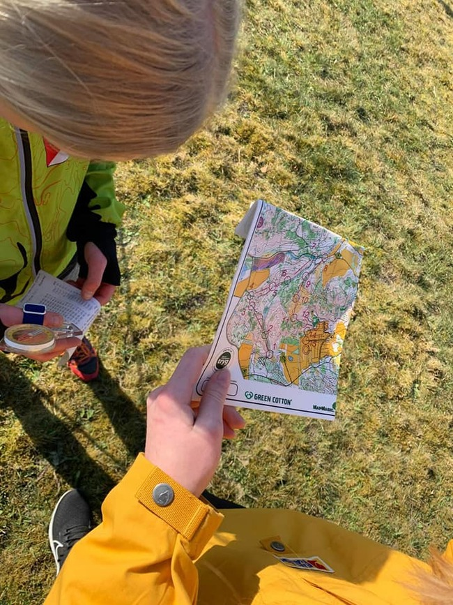
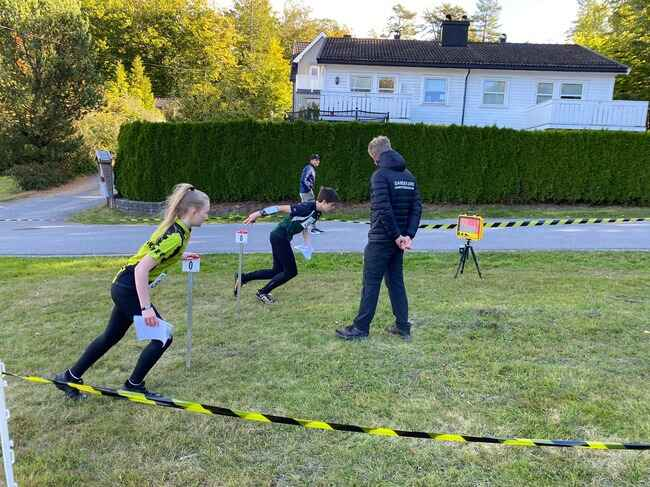

Deltagere i o-løb findes i alle aldre også i RSOK. Ganske små børn, der følges med forældre eller bedsteforældre,
eller som selv løber en bane, når de er klar hertil.
Det er for børn og unge, familier med børn, seniorer og pensionister. Vi byder nemlig alle velkommen til verdens bedste
idræt, der forener fysiske udfoldelser med natur, frisk luft og mentale udfordringer med at lave det bedste vejvalg og
selvfølgelig finde posterne på ens bane.
I princippet er der ingen øvre aldersgrænse, for så længe man kan færdes rundt på banen, kan man deltage. Banerne findes
nemlig i aldersintervaller.
Hvordan foregår O-løb?
Orienteringsløb foregår oftest i skoven både på stier og uden for stierne, men finder også sted i parker og i byer,
fordi man kan navigere og finde poster overalt, blot der er lavet et kort over området.
Vi bruger kort og et kompas, men ikke GPS eller andre tekniske hjælpemidler undervejs på banen - kun til at holde styr
på tiden og måske se hvor man har været i skoven efter løbet.
Posterne er altid markeret med en rød/hvid skærm i terrænet, og der er ingen opgaver eller spørgsmål, man skal svare på
undervejs. Man deltager som oftest individuelt, men til klubløb og mindre træningsløb kan man sagtens følges med andre.
Engang imellem arrangeres stafetorientering med 2-3 deltagere på hvert hold.
O-løb er både naturoplevelser på skovveje og stier men også i skovbunden udenfor stierne.
Det er masser af frisk luft og motion, og det er et forum med aktive og engagerede deltagere, der nyder samværet med
andre, naturen på alle årstider og nyder udfordringerne i orienteringen i eget tempo og på det niveau, som den enkelte
nu har lyst til at udfolde sig i.
O-kort
O-kort tegnes af erfarne orienteringsløbere, og vi anvender logiske og let forståelige signaturer, som man meget hurtigt
lærer at læse og derved omsætte kort til naturen - og omvendt!
Vores o-kort opdateres løbende, og vi har o-kort over mange områder af Rold Skov foruden flere mindre private skove og
offentlige parker. Men også o-kort over både Skørping, Støvring og Terndrup, som vi bruger til by-orientering.
Tag gerne et kig på nogle af kortene med bane eksempler i. Træningskort her på siden. Vil du selv lave baner kan det
gøres på siden her Condes banelægningsprogram
Alt hvad der er gult, er marker eller lysåbne områder. Alt det blå handler om vand, og sorte stiplede streger i
forskellige tykkelser er skovveje og stier. Jo tykkere streg - jo større sti.
Det grønne på kortet fortæller, hvor tæt skoven er, men ikke om det er løvskov eller granskov. Det har vi jo ikke brug
for at vide, men derimod hvor nemt vi kan færdes i skoven. Så jo mørkere grøn farve - jo tættere at færdes i. Dansk

Banernes sværhedsgrader
Banerne er afpasset efter alder, køn og sværhedsgrad, så alle kan være med, uanset hvilket niveau man er på, eller hvor
dygtig eller erfaren man er med kortet i hånden.
Let bane: Kræver ikke så meget erfaring, og introduktionen til banen tager få minutter. Posterne er næsten altid
placeret meget synligt på stierne og de er oftets en post ved markant retningsskift.
Mellem bane: En nem bane, hvor poster kan være flyttet lidt fra stien.
Svær bane: En sværere bane hvor posterne er placeret på tværs af terrænet.
Man er velkommen til at gå banerne, i stedet for at løbe. En børnefamilie vil typisk kunne klare den lette rute på cirka
en halv time.

Mentale fordele
For hjerte og hjerne - O-løb er motion for hjerte og hjerne. Fordi man både udfordrer sig selv fysisk men også mentalt,
når det gælder om at læse kortet og finde posterne på ens bane.
Orienteringsløb giver mange mentale fordele, der både styrker sindet og øger dit velvære. Sporten træner din
koncentration, da du konstant skal være opmærksom på kortet, ruten og omgivelserne, hvilket forbedrer din evne til at
holde fokus i længere tid.
Den fysiske aktivitet i naturen hjælper med at reducere stress og giver en mental pause fra hverdagens bekymringer.
Undervejs lærer du at træffe beslutninger hurtigt og finde løsninger på udfordringer, hvilket skærper din
problemløsningsevne. Yderligere øger sporten din evne til at være til stede i nuet. (KILDE HER!!!!!!!!!!!!!!)